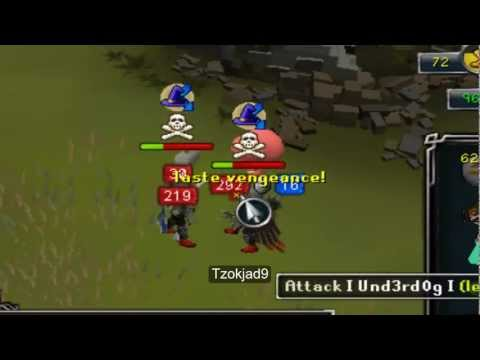
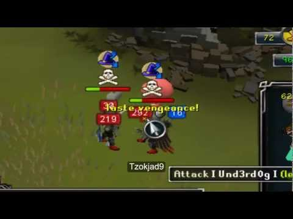

Here are all the Terms, slangs, and all other information you may want to know.

 



By now some of you are probably wondering by now. What on earth is that there Runescape game he keeps going on about. Well Runescape is a Massive Multi Online Role Playing Game. or MMORPG for short. It's based on a land called Geilinor, it's a typical knights and dragon type of game. Some people may relate it to dungeons and dragons, or a type of World of Warcraft. The graphics are not the best, but they're still updating them. They use html5 and java to create this game, so it can be pretty "laggy".
Honorable pking or player killing, is the act of playing the game without the intentions of making another player mad. A few rules may be, asking for fights instead of straight up attacking them. Safing is also something that is looked down upon, as it doesn't give the other player the chance to attempt combos, or anything else. It also leads to very boring fights, that may lead to no victor. Another rule that very righteous players follow is staying at the end of fights, Instead of tabbing out of them. even the most crude player killers will usually say "respect" in honor of a player who stayed for the whole fight. This trait is usually rare, as most prefer not to let another have their valuables.